Evidence
Every number, and the file it came from
Every figure on this site was pulled from a live cluster during the 2026-09-11 run and saved as a raw file, JSON result, YAML manifest, log excerpt or screenshot, in one of the directories below. Node names, routes and other tenants' workload names were scrubbed before these files were committed, replaced with <cluster-domain> wherever a real hostname would appear. Everything lives in the repository under evidence/, so any claim on the site can be checked against the file it names.
act1-metrics
vm-demo alone exposes 61 kubevirt_vmi_* series, 72 with VM-object series added, and the join through the virt-launcher pod's kube_pod_labels reaches 345, inflated right now by a leftover pod from a migration running mid-query (act1-metrics/SUMMARY.md). Two recording rules assumed to exist, vmi:kubevirt_vmi_vcpu:count and namespace:kubevirt_vm:sum, don't exist on this build; the raw metrics kubevirt_vmi_vcpu_count and count by (namespace)(kubevirt_vmi_info) stand in instead. Cluster-wide: 144 distinct kubevirt_* metric names, 3,068 kubevirt_vmi_* series.
Detail: SUMMARY.md. Key files: 01-count-vmi-only.json, 03f-count-full-join-WORKING-and-based-equivalent.json, m02-total-distinct-kubevirt-metric-name-count.json, p13d-allocated-vcpus-CORRECTED-metric-name.json.
act1-migration
A single virtctl migrate vm-demo run took 47 seconds end to end; only the last 14 seconds were the actual memory copy, moving about 849 MiB out of vm-demo's 4.02 GiB of guest memory (act1-migration/SUMMARY.md). The one transfer-rate sample, 466,555,260 bytes/sec (about 445 MiB/s), is a single scrape, not a measured peak: the copy phase finished faster than the scrape interval. The p50/p95 histogram queries return NaN because this virt-controller pod has only ever recorded one migration; the real duration comes from the raw sum/count pair, 47 seconds.
Detail: SUMMARY.md. Key files: timeline.csv, vmim-final.yaml, disk_transfer_rate_bytes.json, histogram_p50.json.
fleet-beat
kubevirt_vmi_number_of_outdated reads 21 and has held flat at 21 for a full 7-day window (fleet-beat/SUMMARY.md). The OutdatedVirtualMachineInstanceWorkloads alert is pending, not firing: both virt-controller replicas are crash-looping on leader election, 106 and 105 restarts each over 30 days, and every flip resets the alert's 24-hour timer, so it likely never got close to firing despite the condition holding all week. workloadUpdateMethods on the HyperConverged CR is an empty list, so nothing moves these VMIs automatically; the fix was written down but deliberately not run, since it touches seven other tenants' namespaces (fleet-beat/SUMMARY.md).
Detail: SUMMARY.md. Key files: 01-outdated-current.json, 02-outdated-7d-1h.json, 06d-virt-controller-pods.txt, 12-patch-NOT-RUN-drain-outdated.txt.
act3-mcp
Plain curl against korrel8r's MCP endpoint, no LLM, no client library, walks the JSON-RPC protocol an agent would use: initialize, tools/list (8 tools), then create_goals_graph from a firing VMCannotBeEvicted alert (act3-mcp/SUMMARY.md). On upstream korrel8r 0.12.1 that call reaches the VMI, the VM, the pod, 296 metric series and 200 log lines, each node carrying the query that produced it. The identical request against GA COO 1.5.2 (korrel8r 0.11.1) stalls at the alert and 136 metric series: it never reaches VMI, pod or logs, because AlertToVMI and VmiToLogs aren't shipped.
Detail: SUMMARY.md. Key files: 05-tools-call-create_goals_graph-response.pretty.json, 11-coo-0.11.1-create_goals_graph-alert-to-vmi-response.pretty.json, 03-tools-list-response.pretty.json.
korrel8r-0.12
A separately deployed instance of upstream korrel8r 0.12.1, not the GA build, configured with 104 correlation rules across five domains (korrel8r-0.12/SUMMARY.md). From the VMCannotBeEvicted alert on vm-non-migratable, asking for every related object returned 200 log lines, 312 metric series, 3 nodes, 1 pod, 1 PVC and 1 netflow record, through the same rule graph act3-mcp exercises over HTTP.
Detail: SUMMARY.md. Key files: rules-count.txt, goals-vmi-to-all.json, alert-VMCannotBeEvicted.json.
troubleshooting-panel
The Troubleshooting Panel UIPlugin, shipped by COO 1.5.2, reconciles cleanly (Available=True, Degraded=False) and runs korrel8r 0.11.1 (troubleshooting-panel/SUMMARY.md). That build is missing five rules added later upstream, VmToAlert, VmiToAlert, AlertToVM, AlertToVMI and VmiToLogs, confirmed by an 18 PASS / 5 FAIL check. Pasting the newer rule templates into the ConfigMap by hand failed two ways at once: a template parse error in the console, and the operator reverting the ConfigMap on its own within two minutes, so this is a version gap, not a config fix.
Detail: SUMMARY.md. Key files: version.txt, rules.txt, custom-rule-experiment-outcome.txt.
demo-vms
Three VMs back this site: vm-demo and vm-demo-2 on ReadWriteMany storage, LiveMigratable=True, and vm-non-migratable on ReadWriteOnce, LiveMigratable=False, reason "PVC vm-non-migratable-disk is not shared" (demo-vms/SUMMARY.md). kubevirt_vmi_non_evictable reads 0 for the migratable VMs and 1 for vm-non-migratable, which is exactly what makes VMCannotBeEvicted fire, since its eviction strategy is LiveMigrate regardless. That alert started at 13:13:14Z, naming the VM, its namespace and its node.
Detail: SUMMARY.md. Key files: oc-get-vmi-wide.txt, thanos-kubevirt_vmi_non_evictable.json, alertmanager-VMCannotBeEvicted.json.
loki-logging
This directory has no SUMMARY.md; the numbers below come from its raw manifests and query results. The LokiStack named logging-loki comes up Ready, with one caveat in its own status condition: ingester replicas (1) equal the replication factor (1), so ingestion stops whenever the single ingester pod restarts (loki-logging/06-lokistack-final.yaml). A ClusterLogForwarder named demo-loki forwards application logs from demo-vms, plus infrastructure logs, into that LokiStack, and a live query returns real log lines from vm-demo-2's virt-launcher pod (loki-logging/04-query-application-demo-vms.json).
Key files: 06-lokistack-final.yaml, 07-clusterlogforwarder-demo-loki-final.yaml, 04-query-application-demo-vms.json, 02-lokistack-status.yaml.
netobserv
NetObserv operator 1.12.2 is installed, its eBPF agents and flowlogs-pipeline capturing flows into a Loki-backed store (netobserv/SUMMARY.md). At query time the ingest rate was 422.71 flows per second, 216,748 total processed since deployment. One worker node sat at its 250/250 pod cap, leaving one of three DaemonSet replicas pending; this costs no coverage of the demo VMs, since all three run on a different node with an active agent and pipeline pod.
Detail: SUMMARY.md. Key files: 07-prometheus-flows-processed-rate.json, 07b-prometheus-flows-processed-total.json, 05-node-80-18-full-describe.txt.
minio
MinIO runs as a single-replica Deployment in minio-demo with a 60 GiB NFS-backed PVC, S3 API on port 9000, console on 9001 (minio/SUMMARY.md). A one-shot Job using mc created two buckets, loki-logging and loki-netobserv; OpenShift Logging and NetObserv both hold secrets pointing at this endpoint. Its startup logs describe a single drive in a single set, which MinIO itself flags as a single point of failure, fine for a demo, not production.
Detail: SUMMARY.md. Key files: minio-pod-status.txt, minio-mc-mb-job-logs.txt, secrets-summary.txt.
schedstats
kernel.sched_schedstats was flipped from 0 to 1 on all three worker nodes at 2026-09-11T12:52:21Z, using a debug pod chrooted into each host rather than a MachineConfig (schedstats/SUMMARY.md). This is what makes the vCPU delay and wait panels in act1-metrics show real, non-zero numbers instead of silently blank ones. The change is deliberately non-persistent: no MachineConfig applied, no node drained, and it reverts on the next reboot of any of these nodes.
Detail: SUMMARY.md. Key file: nodes.txt.
verify
This directory also has no SUMMARY.md; it holds the preflight and correlation-verification scripts run before and during the demo. preflight.txt reports 23 PASS, 12 WARN, 0 FAIL across cluster version, OpenShift Virtualization, COO, Logging, NetObserv, LokiStack, FlowCollector and korrel8r checks. act2-01-korrel8r-verify.txt reproduces the same five missing korrel8r rules named under troubleshooting-panel above; alerts-summary.txt captures both the firing VMCannotBeEvicted alert and the pending OutdatedVirtualMachineInstanceWorkloads alert.
Key files: preflight.txt, act2-01-korrel8r-verify.txt, alerts-summary.txt.
manifests-applied
This directory has no SUMMARY.md either; it is a flat archive of the YAML applied to build the demo, 17 files. It covers the five namespaces and OperatorGroup, the MinIO PVC and Deployment, the LokiStack and its ClusterLogForwarder, the NetObserv subscription, LokiStack and FlowCollector, the Troubleshooting Panel UIPlugin, and the three demo VM specs.
Key files: 00-namespaces.yaml, 02-lokistack.yaml, 08-flowcollector.yaml, vm-non-migratable.yaml.
Screenshots
All eleven images were captured with a headless browser logged in as a cluster admin on <cluster-domain>, OpenShift 4.20.32, COO 1.5.2 (korrel8r 0.11.1); none were edited (evidence/screenshots/SCREENSHOTS.md).
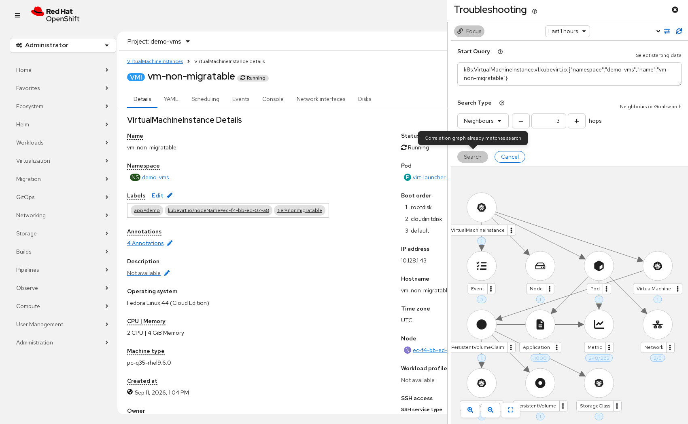
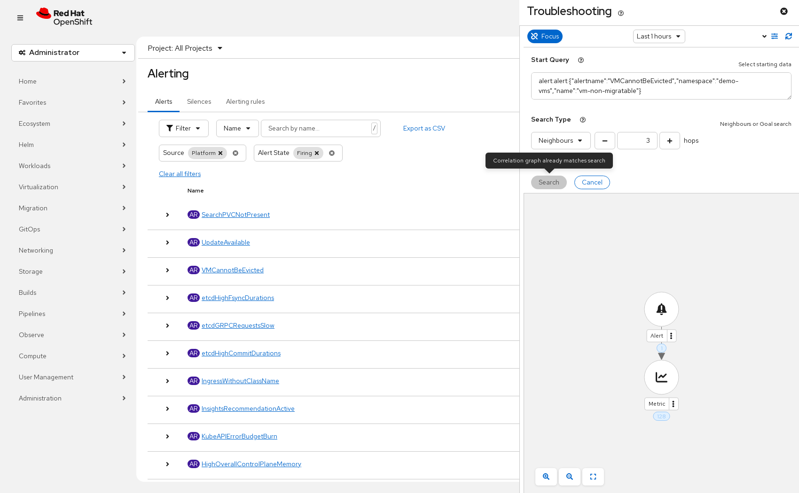
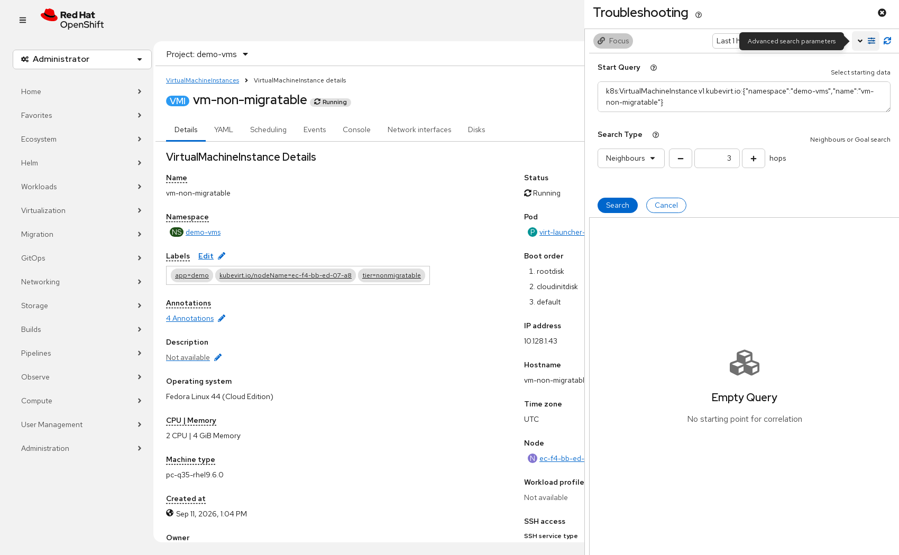
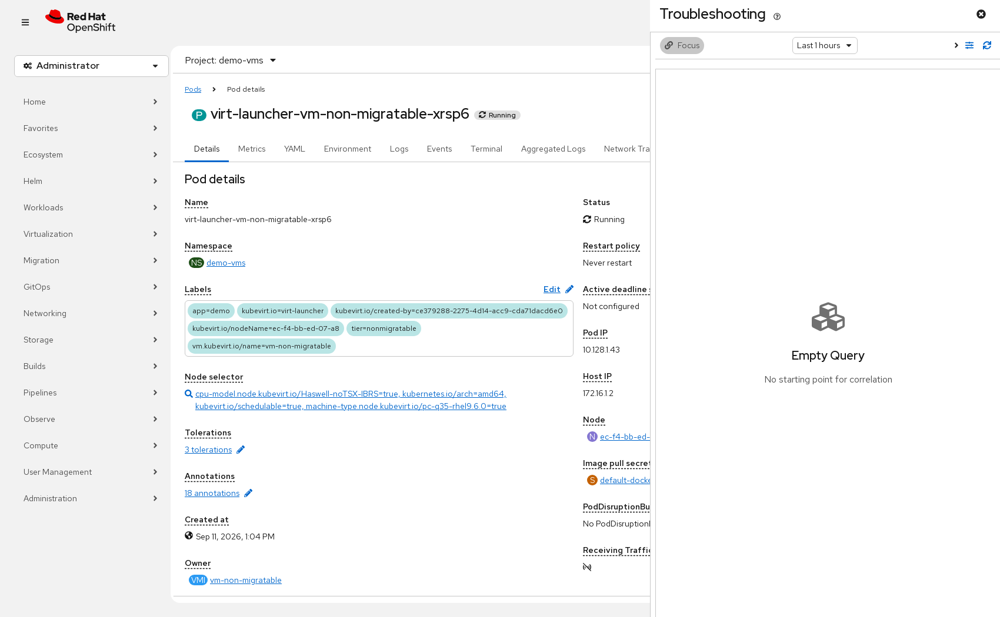
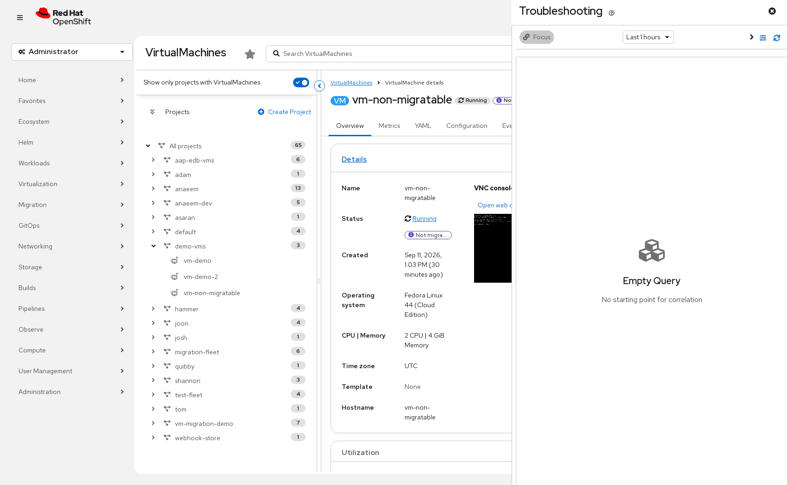
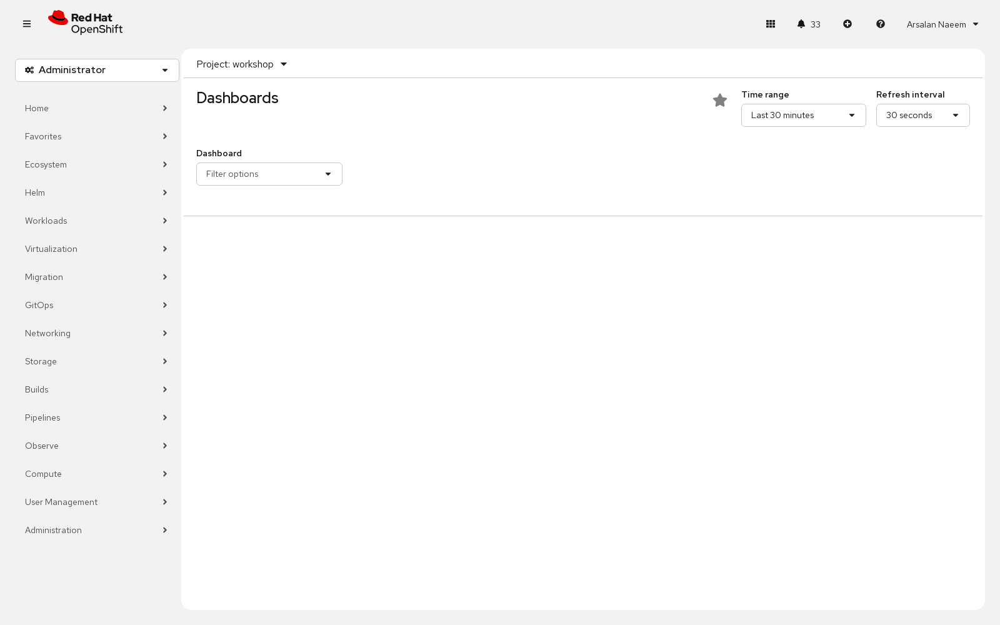
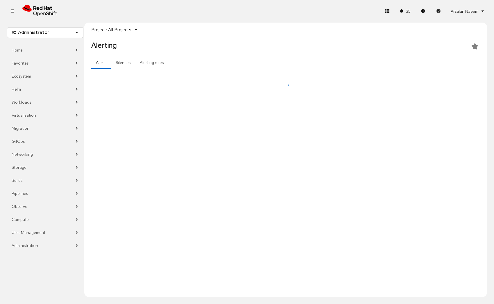
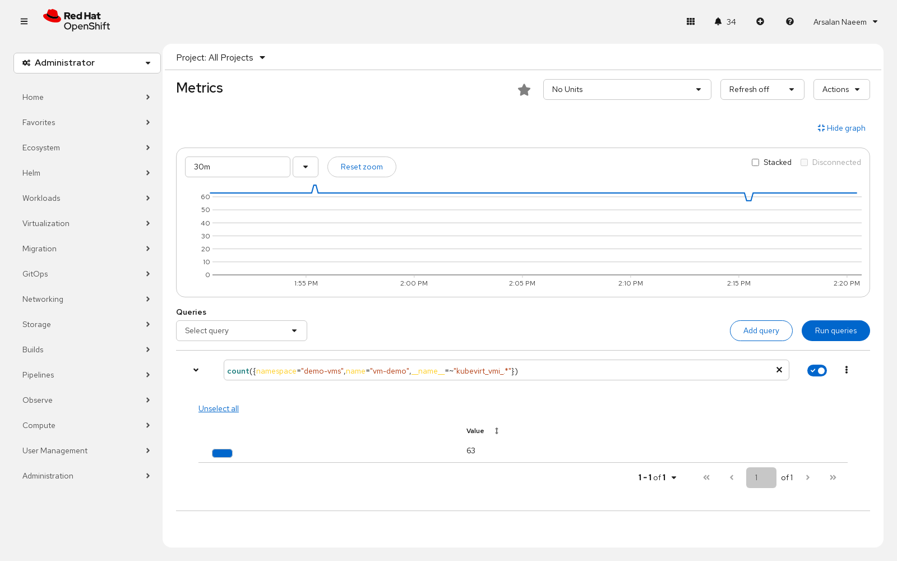
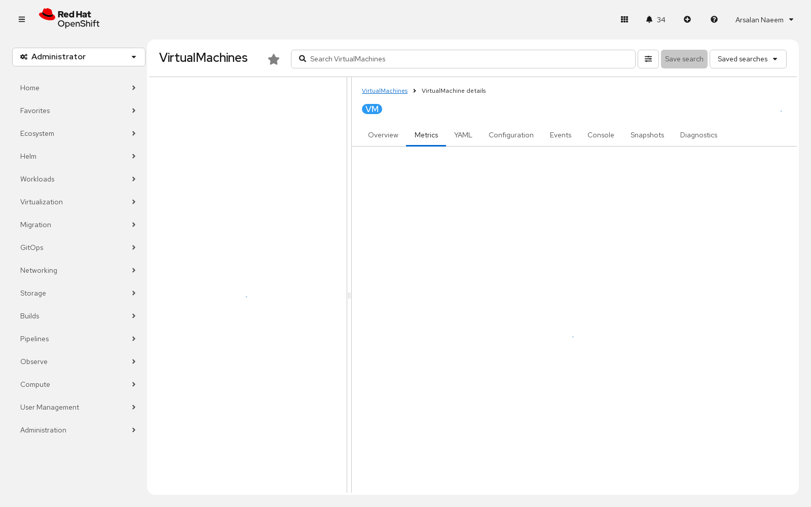
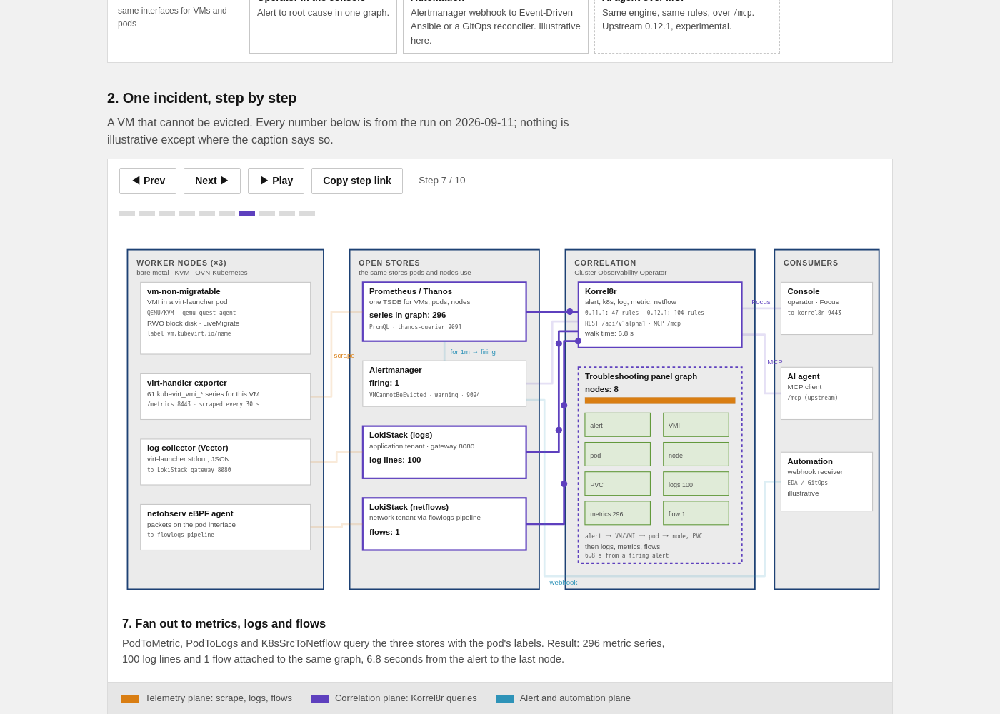
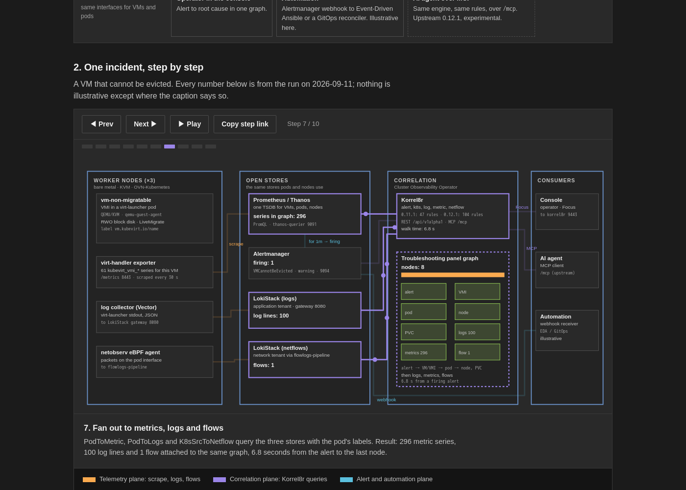